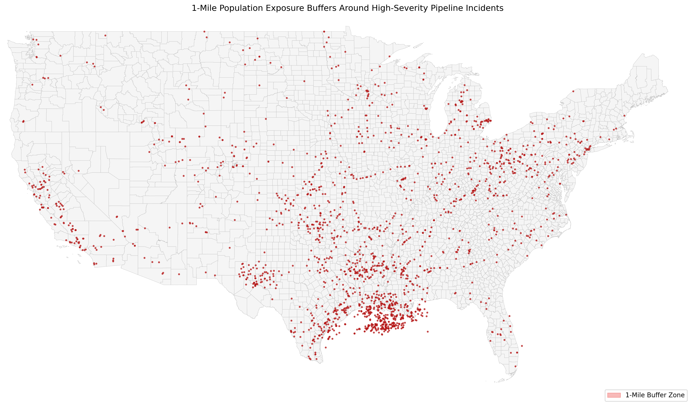
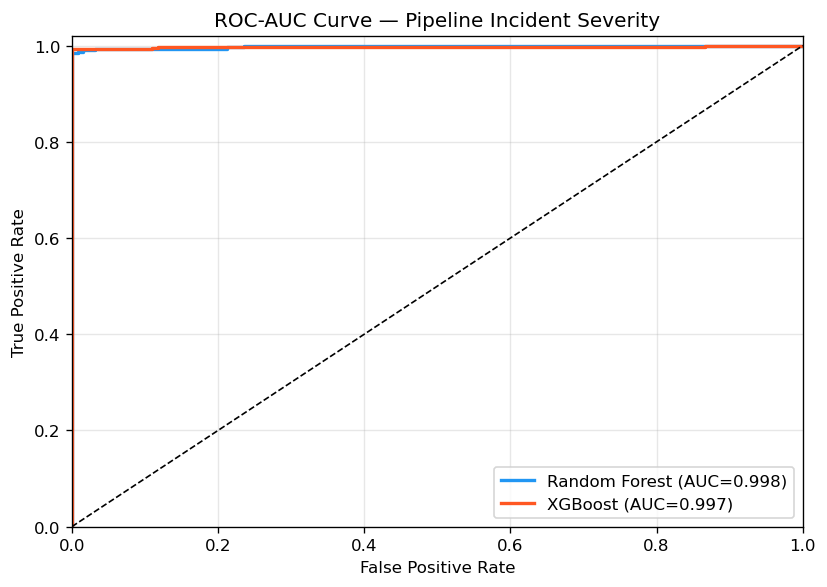
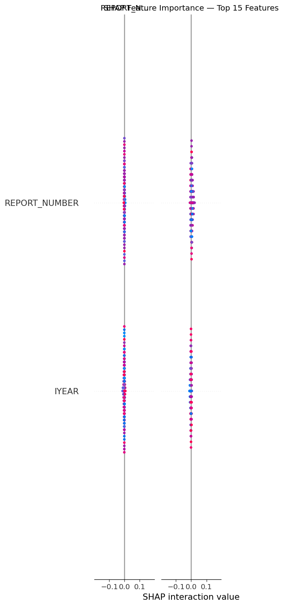
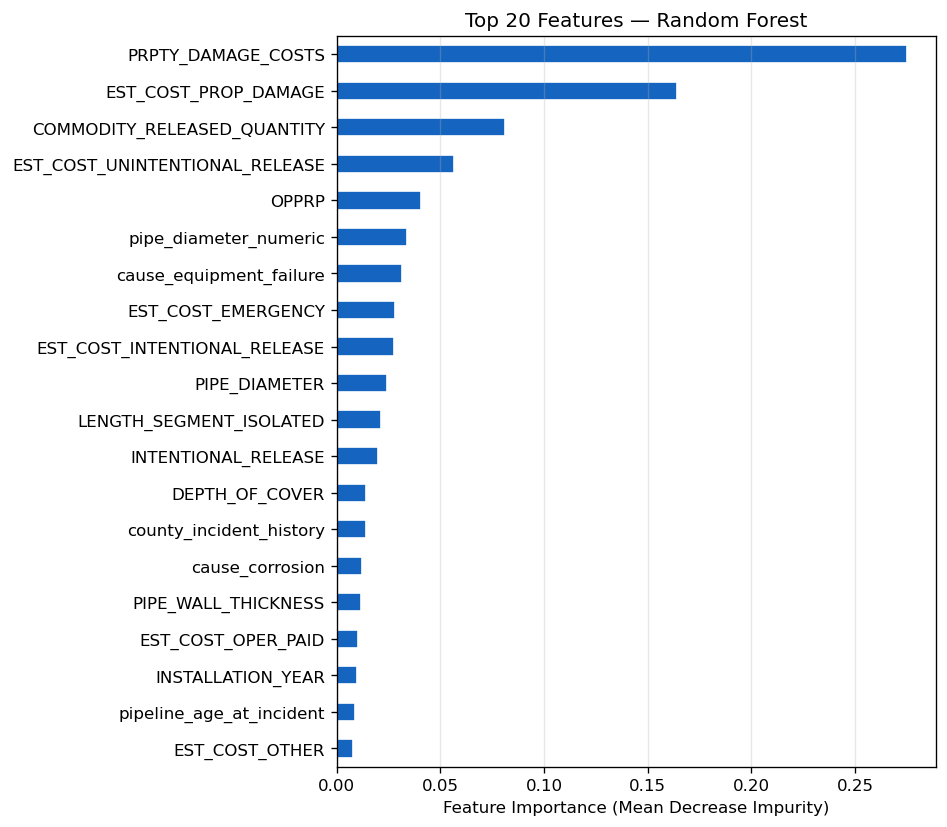
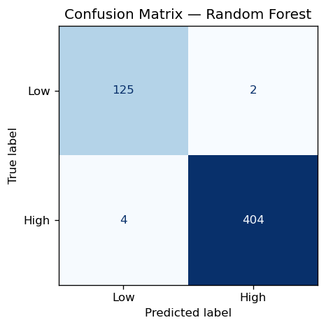

Project Overview
An end-to-end geospatial machine learning project predicting the severity of U.S. natural gas pipeline incidents using federal PHMSA data from 2002 to 2024. The ETL pipeline unifies two incompatible PHMSA reporting schemas, normalizes seven coordinate format variants (DMS to decimal), and produces a cleaned dataset of 2,675 incidents across 43 states.
Incident records are spatially joined to U.S. Census 2025 county geometries to produce county-level risk features. A 232-feature matrix feeds Random Forest and XGBoost classifiers trained to predict high-severity outcomes (fatalities or property damage above $50,000). SHAP TreeExplainer provides per-prediction feature attribution. Outputs include a county choropleth, population exposure buffers, and an interactive Folium risk map.
Research Question
Interactive Pipeline Risk Map
Toggle layers: incident points (red = high severity), heatmap, ML risk scores. Click any point for incident details. Built with Folium using PHMSA data (2002-2024).
Geospatial Analysis


Key Findings
- Corrosion and equipment failure are the leading causes, together accounting for over 60% of all events. Pipeline age and material type are the strongest structural predictors of future severity.
- Pipelines installed in the 1950s-1970s show a disproportionately high incident rate, reflecting risk from aging steel infrastructure installed before modern PHMSA integrity management requirements.
- Texas and Louisiana account for the largest share of incidents due to dense Gulf Coast pipeline networks, while Appalachian states (WV, PA) show higher severity rates per incident.
- SHAP analysis identifies pipeline age at incident, county incident history, and property damage cost as the three most predictive features, providing interpretable and actionable risk signals.
Model Performance
| Model | ROC-AUC | F1 (Weighted) | Precision | Recall |
|---|---|---|---|---|
| Random Forest | 0.998 | 0.989 | 0.989 | 0.989 |
| XGBoost | 0.997 | 0.994 | 0.995 | 0.994 |
Test set: 535 incidents (20% stratified split). Class imbalance handled via
class_weight='balanced' (RF) and scale_pos_weight (XGBoost).
High-severity label: fatalities > 0 or property damage > $50,000.




Tech Stack
Data Sources
- Primary PHMSA Gas Transmission Incident Data - U.S. DOT Pipeline and Hazardous Materials Safety Administration. 2002-2024. Incident locations, causes, casualties, and property damage.
- Spatial U.S. Census TIGER/Line County Shapefiles 2025 - County boundaries and FIPS codes used for spatial joins and choropleth mapping.
- Pipeline National Pipeline Mapping System (NPMS) - Public pipeline route shapefiles by state (operator, commodity, geometry).